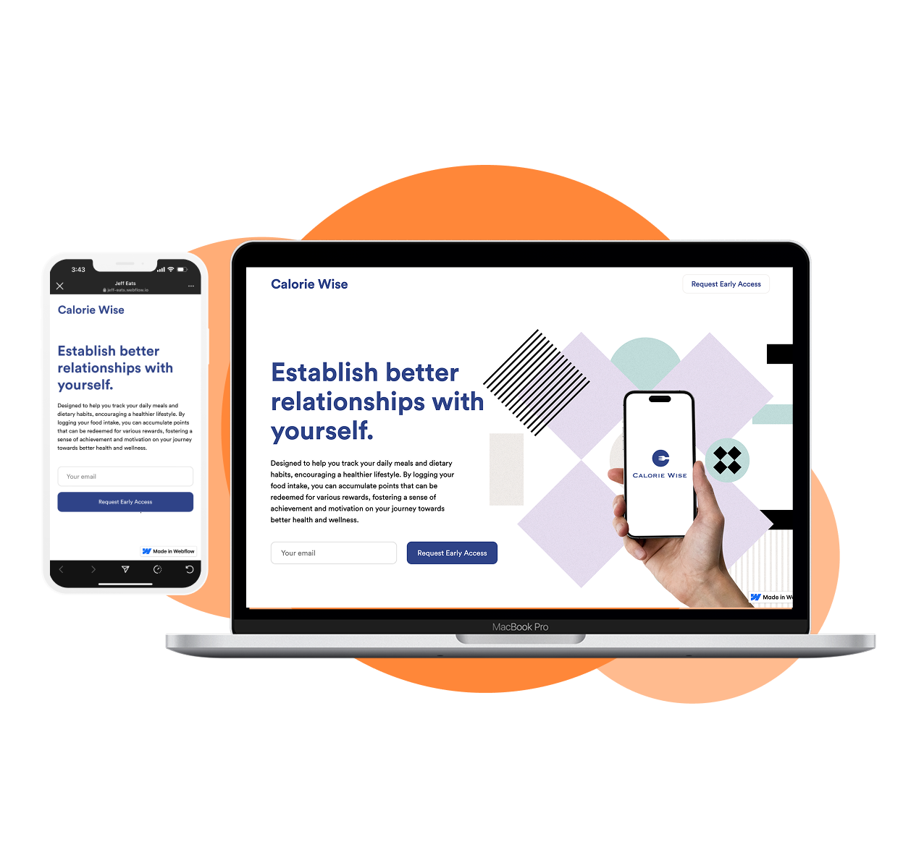
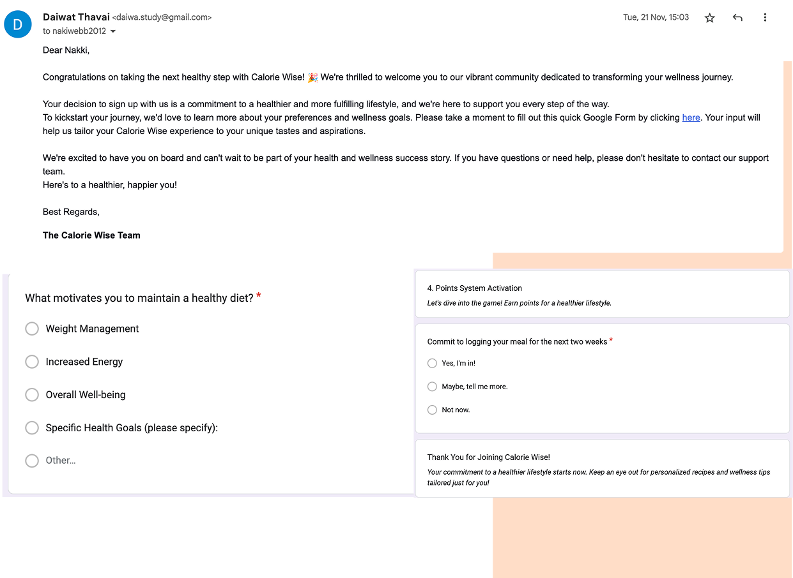
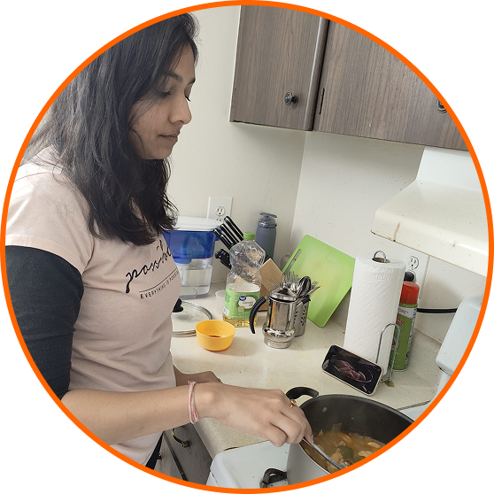
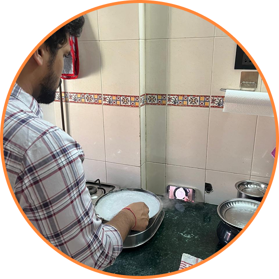
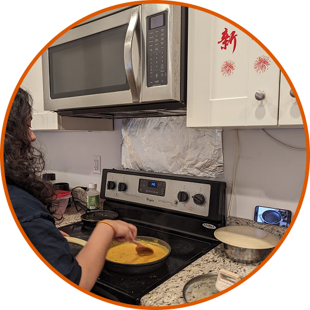
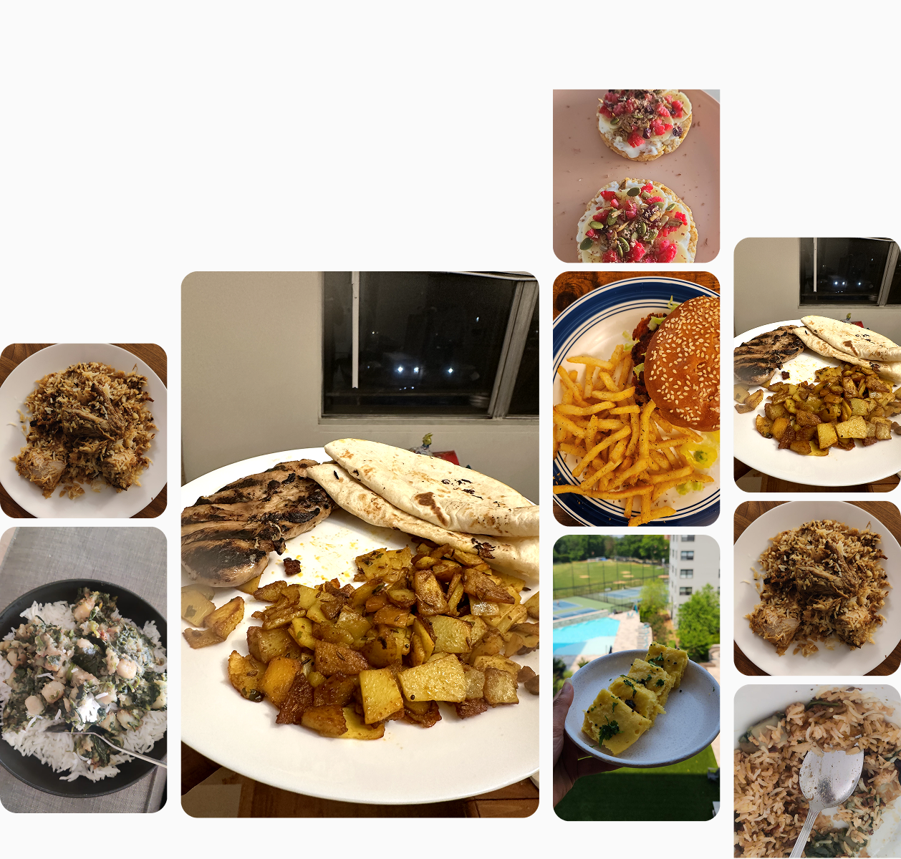
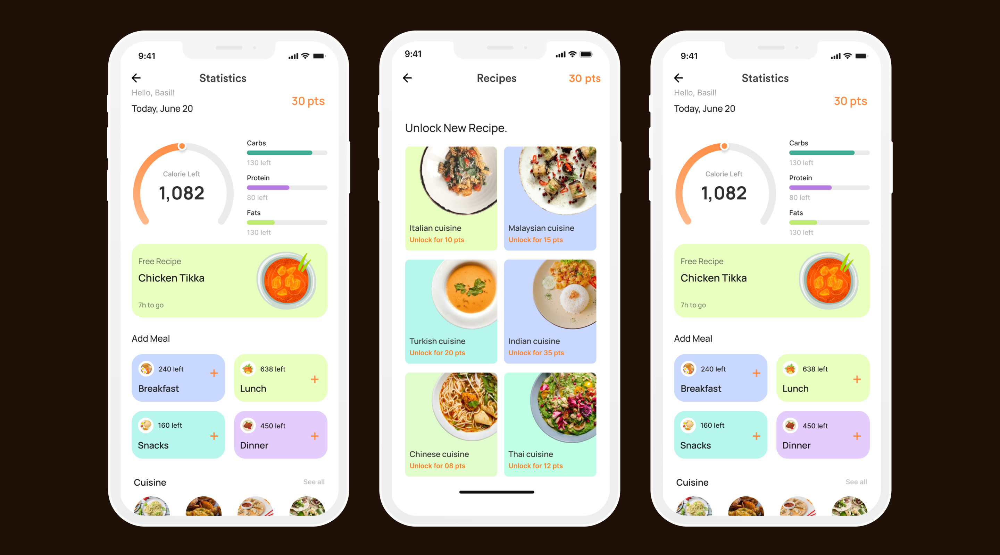

Designing smarter
eating for real life.
Calorie Wise is a nutrition tracking app that makes logging food intuitive, goal-driven, and backed by research — not guilt.
Tracking calories shouldn't feel
like a second job.
Most nutrition apps overwhelm users with data and underdeliver on guidance. Calorie Wise bridges the gap between awareness and action — giving people the tools to understand what they eat, why it matters, and how to improve without obsessing over numbers.
Overnight we need tracking calorie intake regularly, eating quality, and physical health — but getting there is the hard part.
Users know what they should do. The barrier isn't knowledge — it's friction. Too many taps, too little context, too much shame built into the experience.
"I want to eat better but I don't have time to manually log everything after every meal. By the time I get around to it, I've forgotten half of what I ate."
Three problems emerged consistently from research:
Listening before designing.
Conducted 12 user interviews, a survey of 60 respondents, and a competitive audit across 6 leading nutrition apps. We synthesized findings into clear themes.
Designing for one person
means designing for many.
Our primary persona consolidated the most consistent patterns from our research — a busy adult who wants to be healthier but has real constraints on time and attention.
Maya, 29 — Marketing Manager
Wants to lose 10 lbs before summer but can't commit to rigid meal plans. Cooks 3–4 times a week, eats out the rest. Tried MyFitnessPal twice, dropped it both times.
Turning pain points into
design opportunities.
HMW framing helped reframe every frustration as a solvable design challenge — shifting the team from problem-mode to possibility-mode.
A day in the life of a user
trying to eat better.
Mapping Maya's day revealed critical moments where the current experience breaks down — and where Calorie Wise has a chance to intervene.
| Morning Rush | Lunch Break | Afternoon Snack | Dinner Out | End of Day | |
|---|---|---|---|---|---|
| Action | Grabs coffee, skips breakfast | Orders at desk, eats quickly | Vending machine, doesn't log | Restaurant, unsure of portions | Tries to recall everything she ate |
| Feeling | Rushed | Uncertain | Guilty | Anxious | Defeated |
| Gap | No quick log option | No restaurant lookup | No gentle reminder | No portion estimation | Opportunity: end-of-day recap |
Four problems.
Four focused answers.
Quick-Log
One-tap food entry with AI-powered suggestions based on time of day, past meals, and location context. Log a meal in under 10 seconds.
Progress Framing
Replace hard calorie limits with a flexible daily "budget" visualized as momentum — rewarding streaks and consistency, not perfection.
Smart Nudges
Contextual reminders that know when you've eaten but haven't logged. No shaming — just a gentle tap at the right moment.
Meal Intelligence
Restaurant menu scanning and portion estimation using computer vision. Works even when nutritional data isn't provided by the restaurant.
Features that make
Calorie Wise different.
Validating demand before
writing a single line of code.

Before building, we launched a fake landing page to measure real-world interest. The numbers confirmed there was genuine appetite for a better calorie tracking experience.
A drop in sustained
interest over time.

The pretotyping phase using Mechanical Turk provided key insights into user interest and engagement. Initially, users showed moderate interest, but this declined over time, along with their energy levels. While the concept initially engaged users, sustaining their interest proved challenging — their experience became less positive as time went on. These findings highlight the need for improvements to maintain consistent user engagement.
Pilot study with
6 real users.

Radhika
Sanket
Ketki"Logging food everyday is tough, it's boring to do"
"If I could change the recipe that I have unlocked"
Moderated tests
with five users.
I conducted moderated usability tests with five users to identify interaction gaps and problem areas within the app. The process yielded valuable insights into certain features, leading to design iterations informed by user feedback.

| Name | T1 | T2 | T3 | T4 | T5 | T6 | T7 | T8 | Avg |
|---|---|---|---|---|---|---|---|---|---|
| Basil Joseph | S | S | S | S | S | S | S | S | 100% |
| Pratiksha Naik | S | S | S | S | S | S | S | S | 100% |
| Pranavi | S | S | S | S | S | S | S | S | 100% |
| Pranathi | S | S | N | S | S | S | S | S | 90% |
| Rutuja Kulkarni | S | S | N | S | S | S | S | S | 90% |
| Final Score | 100% | 100% | 80% | 100% | 100% | 100% | 100% | 100% |
What this project
taught me.
From wireframe to
a living product.
Every screen went through multiple iterations — shaped by research, usability feedback, and a relentless focus on reducing friction. The final UI is clean, warm, and built around the user's daily rhythm rather than rigid tracking rules.

What this project
taught me.
Calorie Wise pushed me to think carefully about the emotional weight of health products. Every design decision either added to someone's anxiety or reduced it. There's no neutral choice when the subject is someone's body.
The biggest shift: moving from "how do we track more?" to "how do we make users feel capable?" That reframe changed everything — the visual language, the copy tone, the onboarding, the feedback loops.
The next step is integrating with HealthKit and Google Fit, and running a longer retention study over 90 days. The design is ready. The question is whether the habit sticks.